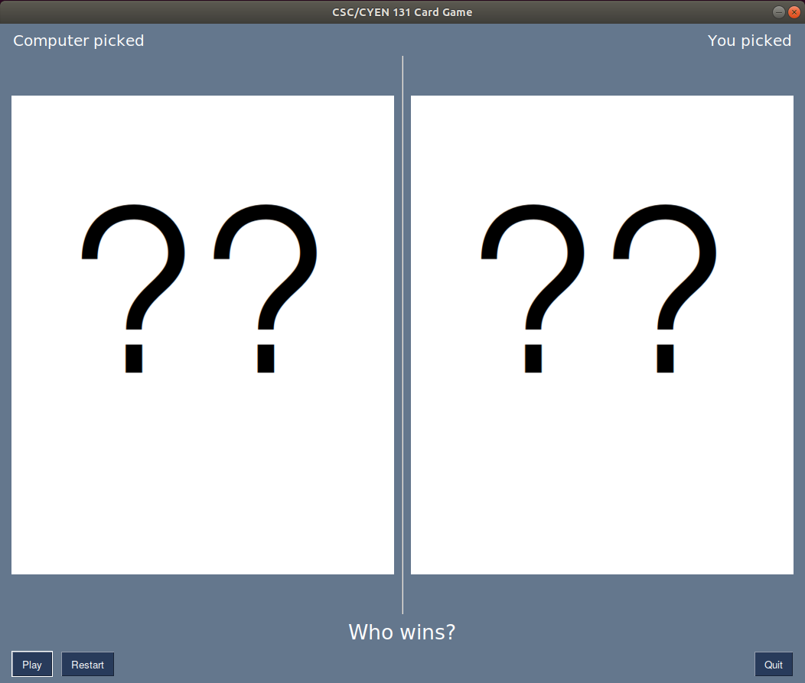
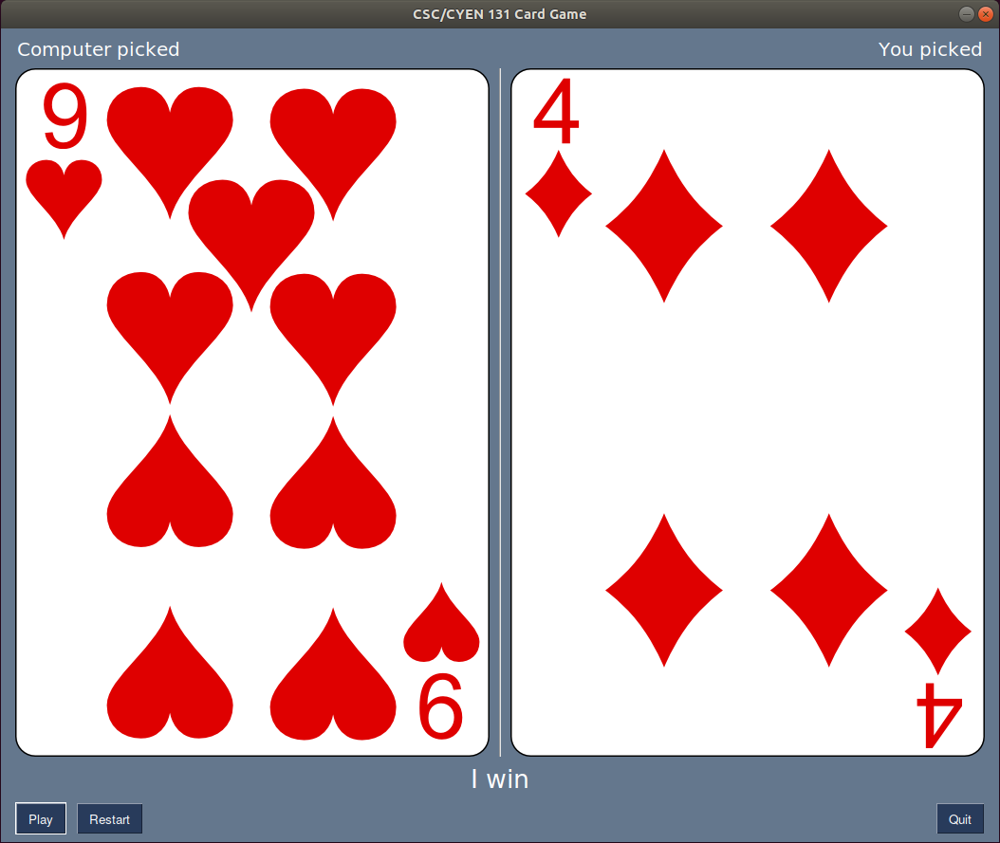
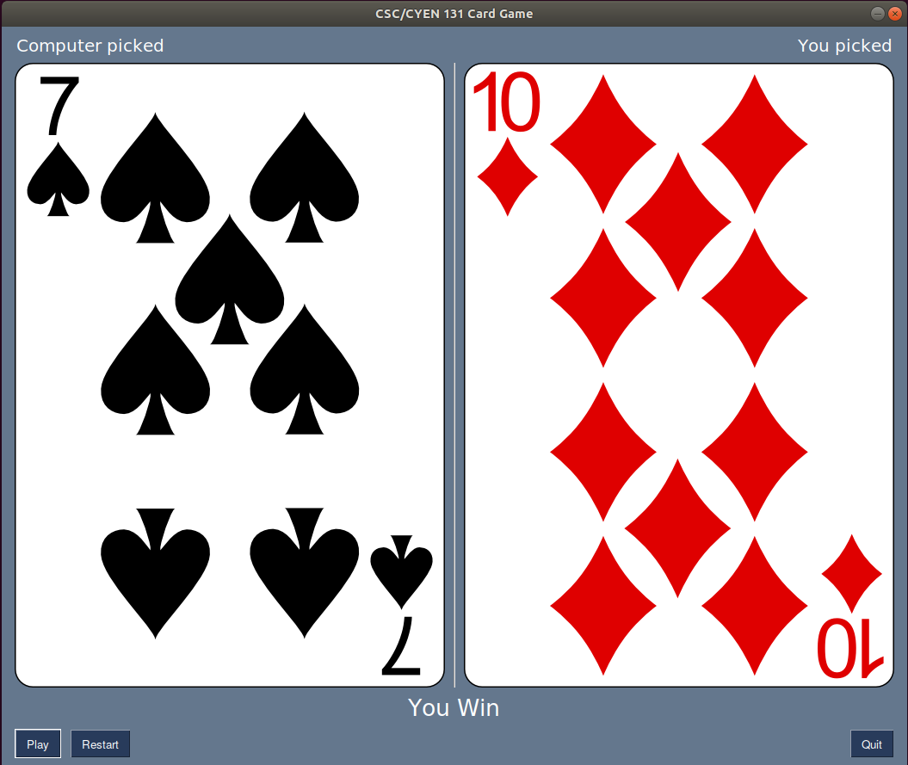
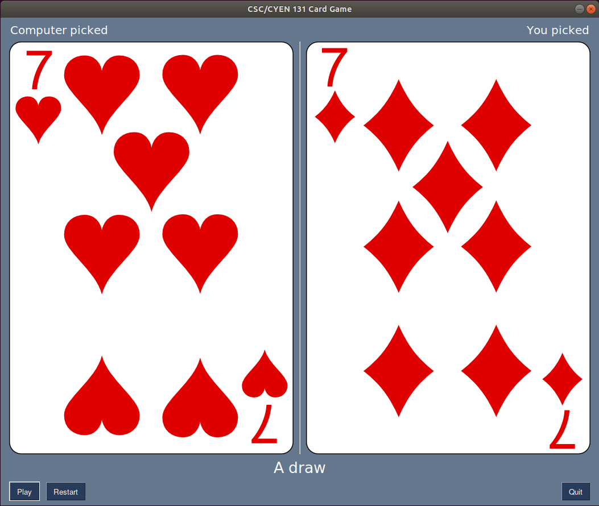

classDiagram
direction LR
class PictureCard {
imagefile: string
}
class Deck {
cards: list of PictureCard objects
__str__(): string
shuffle()
size(): int
draw(): Card
}
class Card {
number: int
suit: string
__str__(): string
__gt__(other: Card)
__lt__(other: Card)
__eq__(other: Card)
}
PictureCard --|> Card
Deck ..|> PictureCard
Program #7: Card Game…Reloaded
Overview
Your task in this programming assignment is to build a GUI on top of the CardGame classes that you designed in the last assignment – more specifically, the Card, and Deck classes. An updated class diagram is shown below. Note that there is a new PictureCard class that is a subclass of the original Card class.
Class Details
PictureCard Class
Below are some conditions for the PictureCard class.
PictureCardis a subclass of theCardclass.The
PictureCardclass has animagefileThe constructor receives the
numberandsuitwhich are use to instantiate theCardclass.The constructor also uses the
numberandsuitto make an appropriate image file name that is stored in theimagefilevariable. Note that the provided images have names that contain both thenumberandsuitin a predictable and uniform pattern. Once you have identified the pattern, use both thenumberandsuitto create the appropriate file name as a string that is stored in theimagefilevariable.The class should have an accessor and mutator for the
imagefilevariable that uses the decorator method. Additionally:- The
imagefilemutator should only allow valid file names. If an invalid file name is attempted (i.e. the image doesn’t exist), then the imagefile is set to the default.png image.
- The
Tip
One options of commands to use for the existence of an appropriate file is isfile().
Deck Class
Below are extra conditions for the Deck class.
- A
Deckclass has acardsinstance variable. This variable contains a list of 36 PictureCard objects i.e. the numbers from 2 to 10 in all 4 possible suits. - The rest of the class is identical to the version in the previous assignment.
Extra Information
The final part of your program would require creating a separate Game.py file that uses your classes to create a GUI front end for the game. The rules of the game were described in the last assignment. Feel free to use whatever library you are comfortable using for the GUIs in this assignment. Suggestions include PySimpleGUI and Tkinter. Below are a few screenshots showing what the GUI could look like.

The image above shows a sample opening screen of the game i.e. what the player sees when the game starts. The player will also see this screen if they click restart. The GUI allows the user to “play”, “restart” or “quit”. Selecting Play will draw two cards (one for the computer and one for the player), and display those cards in the appropriate side of the window. It will also show the result of the game at the bottom of the screen.
A user can repeatedly select play and it will update the screen accordingly. However, when the deck has run out of cards, selecting play will simply close the window.
Selecting Restart will fill the deck of cards with new cards and bring you back to the screen above. This will allow the player to keep on playing without fear of running out of cards.
Selecting Quit will close the window and game.



The images above shows an example of what the player might see during any given round. Note that one side of the screen shows the card that the computer picked, and the other side shows the card that the user picked. The result of the round of the game is shown as a string below the cards.
Final Thoughts
Even though this might seem like a lot, it is actually built on concepts you should be familiar with. Similar to your last assignment, all your code should be in the same directory so that the Game.py file you create can find and use the Cards.py file that contains your classes. You should also place the card images provided in a subfolder so that they can easily be accessed by your code.
One thing worth noting is that your Game.py file should make use of the classes in the Cards.py. This means using objects, and instance variables as frequently as possible in your Game.py file. As an example, when displaying a card in your GUI, instead of hard-coding the name of the image file, make use of the imagefile variable that is one of the elements of the PictureCard class.
Another thing worth noting is that this assignment affords you a lot of freedom in how you want to tackle it. To this end, you will not be provided with a template file. It will be up to you to create the entire Game.py file in whatever manner you so decide. If your code requires special installations, make sure to mention them in the comments section at the top of your file.
Should you feel so inspired, feel free to adjust the GUI and make it more aesthetically pleasing. Potential improvements include but are not limited to:
- having an introduction window that explains the game and allows you to click and proceed to the windows shown above.
- having a counter of the number of cards left in the deck shown on the window.
- having a different window that is displayed when the game ends
Having any improvements on the game could earn you up to 5 bonus points on this assignment. Those points will be assigned based on the scope and/or complexity of the improvments to the GUI and/or game play.
When you submit your code, make sure to zip up all the files (Game.py, Cards.py, and any images you might have used) and upload the entire zip file to Canvas.
Your code will not be evaluated using any autograders. You will have to manually make sure that your code meets all the above mentioned requirements and then submit it for manual evaluation on Canvas.
Good luck.